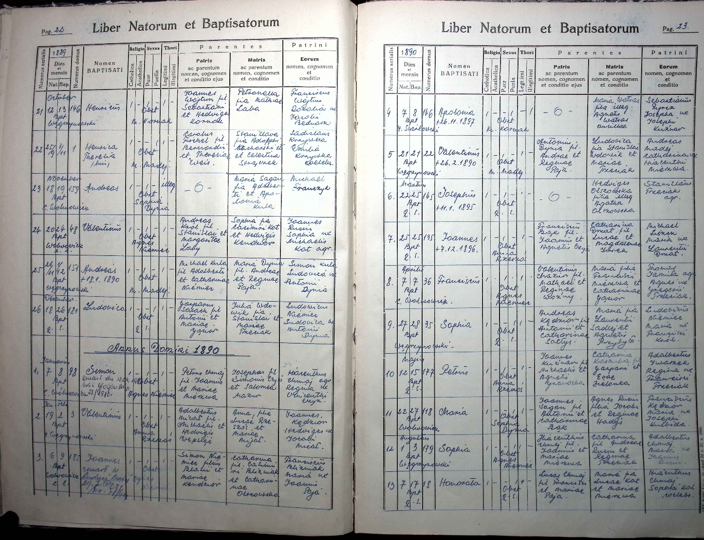
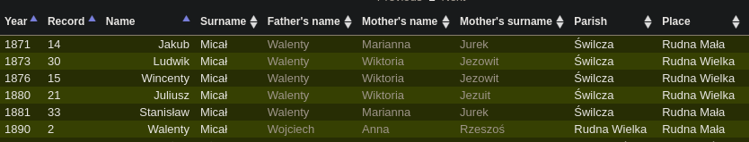
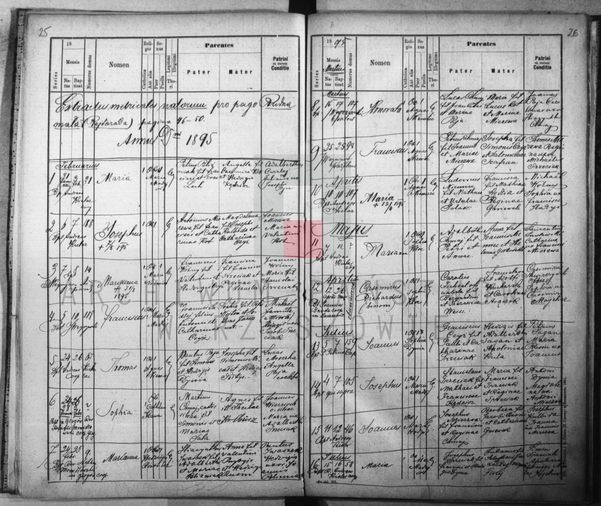
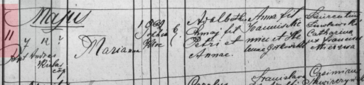
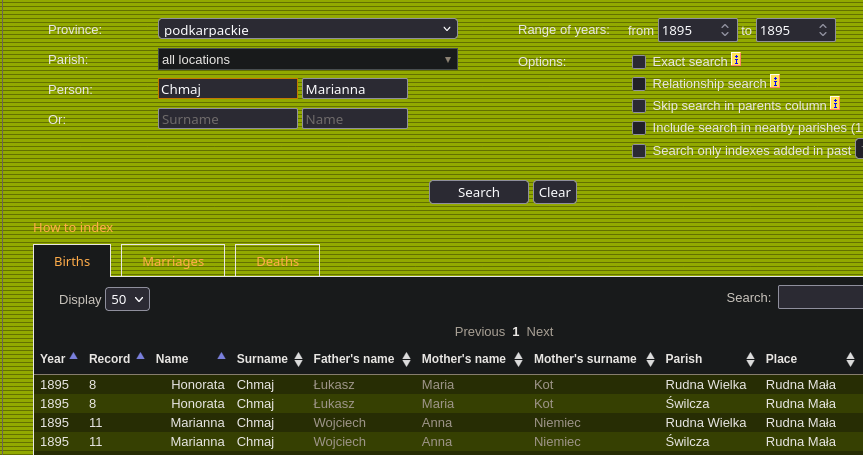
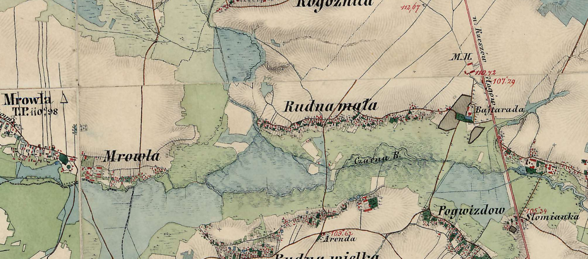
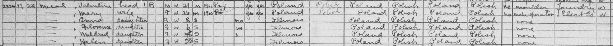
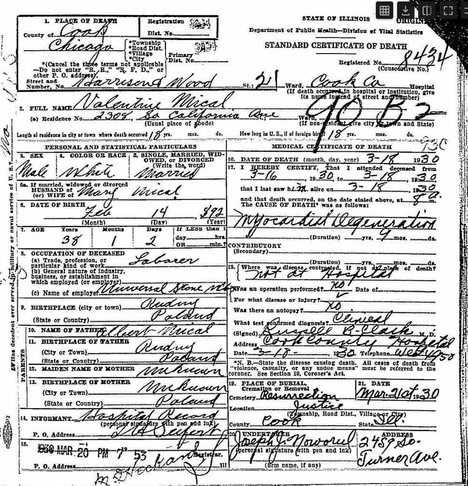
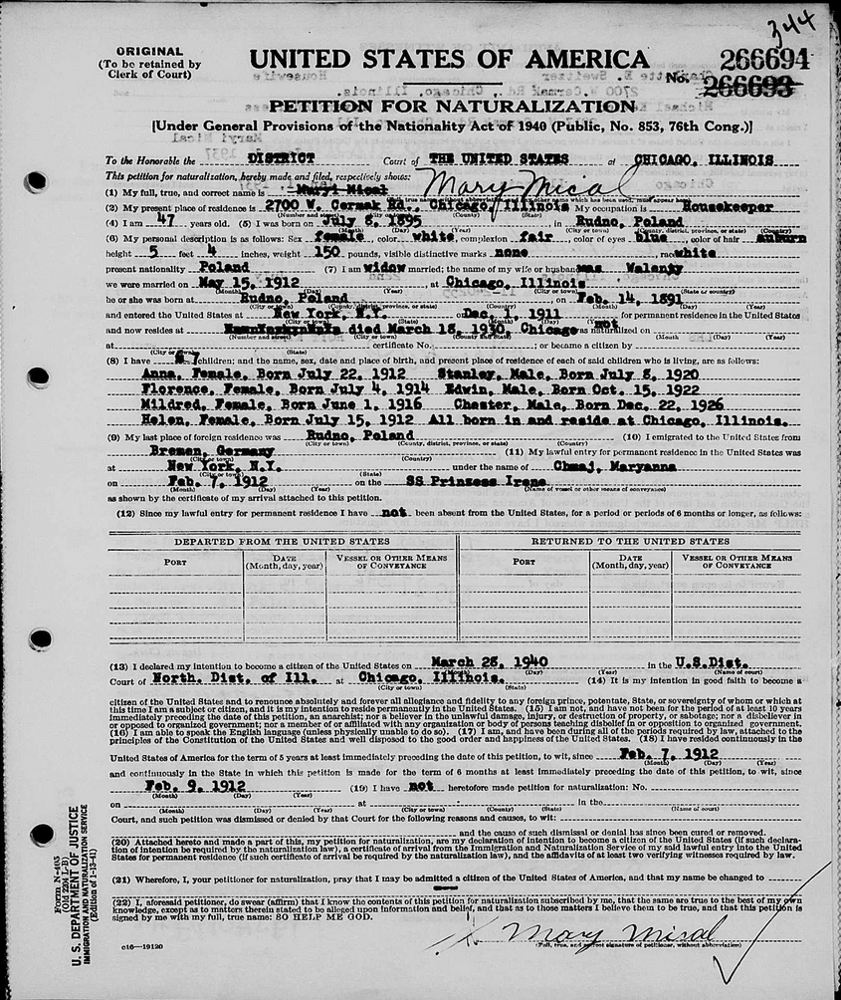

Here is the full page of the baptisms record for Valentine. This one is very likely to be correct and the right person.

Here is a close up. His birthday is January 19 and baptism is February 3. Likely birthday was misremembered and just celebrated on Valentine's Day.

Here you can see the Polish record site translates the Latin Valentinus to Walenty.

This record is more speculative. It's possible this is a different person. However she used a first name that's one letter off on one of her naturalization documents.

Here is a close up. The birthday is May 11, not July 8. So it's possible that it is misremembered or a different person.

Here is the Polish digital indexing. Accessible at the same website.

This is the church where the baptisms took place however. It was rebuilt in 1912 and the original wooden one was torn down. They were in the same location which is 4 km from Rudna Mala.

Here is the map made by the Austro-Hungarian Empire in 1861–1864. It shows the village unfortunately the home numbers are not visible. Valentine's baptism record appears to say building 3 but the handwriting is hard to read so not sure and no other building number records could be found.

Here is a description of the town from a geography made when Poland was formed. Keep in mind it was translated with Google Translate so it may be totally incorrect.
The following is a translation of the entry from the Slownik geograficzny Krolestwa Polskiego i innych krajow slowianskich (Geographical Dictionary of the Kingdom of Poland and Other Slavic Countries), Volume IX, a 15-volume encyclopedia published between 1880–1902.
Rudna Mala and Rudna Wielka, two villages, Rzeszow district. Rudna Mala lies on the Mrowka, a left-bank tributary of the Wislok, along the road from Rzeszow northward (9 km) to Glogow. Rudna Wielka lies to the south of the former, by the Archduke Karl Ludwig railway line (8 km west of Rzeszow), which has a station there.
Along the river dividing both villages stretch marshy meadows; elevation 207 m, rising northward to 218 m on a hill called Piaskowa, and southward to 225 m near the station in fields called Pod Mitocinem. The area is forested — cleared and densely settled to the south, but to the north and northwest vast forests remain, cleared and settled only along the streams.
Roman Catholic parish in Swilcza. Rudna Mala borders Rogoznica to the north, Mrowka to the west, Zaczernie to the east. Rudna Wielka borders Kamyszyn to the west, Przybyszow and Mitocin to the south, Trzebowisko to the east. The major estate in both villages belongs to the Dabski family.
Rudna Mala has a distillery and the settlement Budki pod Lasem (30 houses, 148 people) situated north of the village at 218 m, as well as the farmstead Rajtarda near the road. Rudna Wielka, besides the railway station (between Trzciana — 143 km from Krakow — and Rzeszow, 158 km from Krakow), has a water mill, the hamlet Pogwizdow (111 houses, 505 people), and the settlement Slomianka where the Glogow road crosses the Sokolow-to-Trzebowisko road.
Rudna Mala (with Budki and the manor, 6 houses, 42 people) totals 182 houses and 886 inhabitants (439 male, 447 female) — 863 Roman Catholics and 23 Jews. The major estate holds 267 morgs of farmland, 92 of meadow, 119 of pasture, and 867 of forest. Minor holdings: 473 morgs farmland, 142 meadow, 127 pasture.
Rudna Wielka (with hamlet, settlement, and manor, 7 houses, 79 people) totals 274 houses and 1,306 inhabitants — 1,271 Roman Catholics, 35 Jews. Major estate: 295 morgs farmland, 76 meadow, 9 pasture. Minor holdings: 575 farmland, 186 meadow, 172 pasture.
The soil is sandy but rich in moisture and therefore fertile; the forests are coniferous.

This is the 1920 census showing the family. Grandpa Stasiu was born later that year. Notice under immigration it shows the year 1910–1911 and under naturalization it says "pa" for paperwork applied. Meaning they were not American citizens on January 31, 1920 when Poland was created and meaning they received Polish citizenship that day making Grandpa Stasiu born of Polish citizens thus legally a Polish and American citizen.

Here is Valentine's death record.

Here is one naturalization document.

This document is the strongest tie to the baptism record because the last name is the same and the first name is quite similar. However the birthdates are not the same and the name is slightly off. These kinds of incorrect spellings of places and names were common for the time. Also dates are commonly approximate.